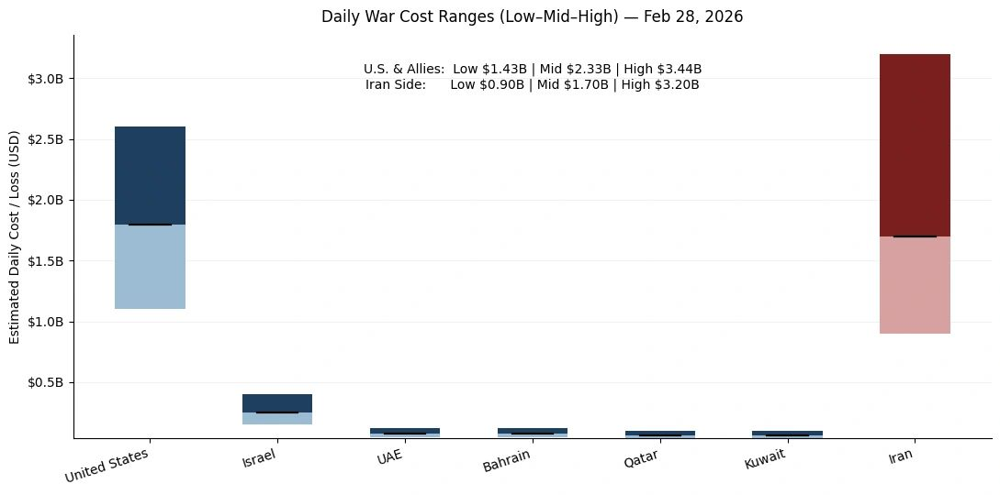

2026 Middle East Conflict Cost Monitor (MCCM)
An Event-Driven, Daily Expenditure and Loss Scenarios Assessment Series
Powered by AIPAMS
Introduction
The 2026 Middle East Conflict Cost Monitor (MCCM) provides an event-driven, scenario-based assessment of daily war-related expenditures and losses across major actors involved in the conflict. Using a structured low–mid–high estimation framework, the series aggregates publicly available operational indicators, force posture changes, strike intensity proxies, and reported material damage to produce comparable daily cost ranges.
MCCM is designed as a rolling monitoring instrument rather than a definitive accounting ledger. All estimates are expressed in current U.S. dollars (USD) and reflect scenario-based approximations intended for comparative analysis and policy discussion.

Note:
Bars represent estimated daily war-related cost ranges under low, mid, and high scenarios. The lower (lighter) segment indicates the Low–Mid range, the upper (darker) segment indicates the Mid–High range, and the black horizontal marker denotes the midpoint (Mid) estimate. Columns are displayed as floating range bars beginning at the low estimate rather than zero to emphasize scenario variability. Bloc-level totals (U.S. & Allies; Iran side) reflect the sum of national estimates and are intended for comparative scenario analysis rather than precise accounting. All values are expressed in current U.S. dollars (USD).
Selected References:
Al Jazeera. (2026, February 28). Multiple Arab states that host US assets targeted in Iran retaliation. Retrieved February 28, 2026, from https://www.aljazeera.com/news/2026/2/28/multiple-gulf-arab-states-that-host-us-assets-targeted-in-iran-retaliation
Anadolu Agency. (2026, February 28). Kuwait summons Iranian ambassador over missile, drone attacks. Retrieved February 28, 2026, from https://www.aa.com.tr/en/middle-east/kuwait-summons-iranian-ambassador-over-missile-drone-attacks/3844209
Associated Press. (2026, February 28). Israeli officials say Iran’s Supreme Leader Khamenei has been killed; no word from US or Iran. Retrieved February 28, 2026, from https://apnews.com/article/c2f11247d8a66e36929266f2c557a54c
Bahrain National Communication Centre. (2026, February 28). Statement on missile interceptions over Bahraini airspace. Government of Bahrain. Retrieved February 28, 2026, from (official page unavailable in provided corpus; cite the official release page when archived/linked)
Belasco, A. (2011). The cost of Iraq, Afghanistan, and other Global War on Terror operations since 9/11 (CRS Report No. RL33110). Congressional Research Service. Retrieved February 28, 2026, from https://www.everycrsreport.com/files/20110329_RL33110_be1a00c99d668bee3b4ec4f6fc82e914f62c39f0.pdf
Central Military Commission (CCTV.cn). (2026, February 28). 伊朗伊斯兰革命卫队宣布启动“诚实承诺4号”大规模军事行动 [IRGC announces launch of “True Promise 4” large-scale operation]. 央视网. Retrieved February 28, 2026, from https://news.cctv.cn/2026/02/28/ARTI9k5Qbo3NDBaBvwmqfSRY260228.shtml
China National Radio. (2026, March 1). 伊朗军方称过去数小时内击落12架敌方作战和侦查无人机 [Iran reports downing 12 enemy combat and reconnaissance drones in recent hours]. 央广网. Retrieved February 28, 2026, from https://news.cnr.cn/sq/20260301/t20260301_527539248.shtml
Congressional Budget Office. (2019). The cost of supporting military bases. Retrieved February 28, 2026, from https://www.cbo.gov/system/files/2019-11/55849-CBO-BOS-costs.pdf
Congressional Budget Office. (2025, January 3). An analysis of the Navy’s 2025 shipbuilding plan. Retrieved February 28, 2026, from https://www.cbo.gov/system/files/2025-01/60732-shipbuilding.pdf
Congressional Budget Office. (2025). CBO’s interactive force structure tool. Retrieved February 28, 2026, from https://www.cbo.gov/force-structure-tool
Council on Foreign Relations. (2025). U.S. military presence in the Middle East. Retrieved February 28, 2026, from https://www.cfr.org
Defense Acquisition University. (2025, February 5). Operating and support cost-estimating guide. Retrieved February 28, 2026, from https://www.dau.edu/sites/default/files/2025-02/2025%20OS%20Cost%20Estimating%20Guide.pdf
Defense Intelligence Agency. (2018). Iran military power: Ensuring regime survival and securing regional dominance. U.S. Department of Defense. Retrieved February 28, 2026, from https://www.dia.mil/portals/110/images/news/military_powers_publications/iran_military_power_lr.pdf
Defense Intelligence Agency. (2024). Military power publications. Retrieved February 28, 2026, from https://www.dia.mil/Military-Power-Publications/
Defense Intelligence Agency. (n.d.). Iran: Enabling Houthi attacks across the Middle East (Functional Threat Report). Retrieved February 28, 2026, from https://www.dia.mil/Portals/110/Documents/News/Military_Power_Publications/Iran_Houthi_Final2.pdf
Government Accountability Office. (1998). Navy aircraft carriers: Cost-effectiveness and related issues (Report No. NSIAD-98-1). Retrieved February 28, 2026, from https://www.gao.gov/assets/nsiad-98-1.pdf
Government Accountability Office. (2023). Weapon system sustainment: Navy ship usage has decreased while operating and support costs have increased (Report No. GAO-23-106440). Retrieved February 28, 2026, from https://www.gao.gov/assets/gao-23-106440.pdf
Government Accountability Office. (2024). DOD identified operating and support cost growth but needs to improve how it uses that information (Report No. GAO-24-866936). Retrieved February 28, 2026, from https://www.gao.gov/assets/870/866936.pdf
International Institute for Strategic Studies. (2025). The Military Balance 2025. Retrieved February 28, 2026, from https://www.iiss.org/publications/the-military-balance/2025/the-military-balance-2025/
International Institute for Strategic Studies. (2026, February). Global defence spending continues to grow amid geopolitical uncertainty. Retrieved February 28, 2026, from https://www.iiss.org/online-analysis/military-balance/2026/02/global-defence-spending-continues-to-grow-amid-geopolitical-uncertainty/
Missile Defense Advocacy Alliance. (n.d.). Missile interceptors by cost. Retrieved February 28, 2026, from https://www.missiledefenseadvocacy.org/missile-defense-systems-2/missile-defense-systems/missile-interceptors-by-cost/
OECD. (2025). Implementation toolkit for the OECD recommendation on public policy evaluation. OECD Publishing. Retrieved February 28, 2026, from https://www.oecd.org/content/dam/oecd/en/publications/reports/2025/02/implementation-toolkit-for-the-oecd-recommendation-on-public-policy-evaluation_f24516be/77faa4fe-en.pdf
OECD. (2020). Improving governance with policy evaluation. OECD Publishing. Retrieved February 28, 2026, from https://www.oecd.org/content/dam/oecd/en/publications/reports/2020/06/improving-governance-with-policy-evaluation_040f9225/89b1577d-en.pdf
Office of the Under Secretary of Defense (Comptroller). (2024). DoD financial management regulation (FMR), Volume 11A, Chapter 6: Annual reimbursable rates. U.S. Department of Defense. Retrieved February 28, 2026, from https://comptroller.war.gov/portals/45/documents/fmr/current/11a/11a_06.pdf
Office of the Under Secretary of Defense (Comptroller). (2024). FY 2025 reimbursable rates: Fixed wing and helicopter aircraft hourly rates (PDF). U.S. Department of Defense. Retrieved February 28, 2026, from https://comptroller.war.gov/Portals/45/documents/rates/fy2025/2025_b_c.pdf
Office of the Under Secretary of Defense (Comptroller). (2025). FY 2026 weapons (PDF). U.S. Department of Defense. Retrieved February 28, 2026, from https://comptroller.war.gov/Portals/45/Documents/defbudget/FY2026/FY2026_Weapons.pdf
Reuters. (2025, September 3). Lockheed Martin wins $9.8 billion Patriot missile contract. Retrieved February 28, 2026, from https://www.reuters.com/business/aerospace-defense/lockheed-martin-wins-98-billion-patriot-missile-contract-2025-09-03/
Reuters. (2025, December 23). RTX unit Raytheon lands $1.7 billion deal to supply Patriot systems to Spain. Retrieved February 28, 2026, from https://www.reuters.com/business/aerospace-defense/rtx-unit-raytheon-lands-17-billion-deal-supply-patriot-systems-spain-2025-12-23/
Reuters. (2025, April 27). World military spending hits $2.7 trillion in record 2024 surge. Retrieved February 28, 2026, from https://www.reuters.com/business/aerospace-defense/world-military-spending-hits-27-trillion-record-2024-surge-2025-04-27/
RAND Corporation. (2023). Assessing the value of overseas military campaigning in strategic competition (Report No. RRA1798-1). Retrieved February 28, 2026, from https://www.rand.org/content/dam/rand/pubs/research_reports/RRA1700/RRA1798-1/RAND_RRA1798-1.pdf
Stockholm International Peace Research Institute. (n.d.). SIPRI military expenditure database. Retrieved February 28, 2026, from https://www.sipri.org/databases/milex
Stockholm International Peace Research Institute. (n.d.). SIPRI military expenditure database (portal). Retrieved February 28, 2026, from https://milex.sipri.org/
Stockholm International Peace Research Institute. (n.d.). Sources and methods: SIPRI military expenditure database. Retrieved February 28, 2026, from https://www.sipri.org/databases/milex/sources-and-methods
Taleb, N. N. (2007). The black swan: The impact of the highly improbable. Random House. (New York, NY)
U.S. Naval Institute News. (2022, May 25). Raytheon awarded $217M Tomahawk missiles contract for Navy, Marines, Army. Retrieved February 28, 2026, from https://news.usni.org/2022/05/25/raytheon-awarded-217m-tomahawk-missiles-contract-for-navy-marines-army
U.S. Transportation Command. (2025). FY 2025 AMC SAAM JETP exercise and contingency rates and guidance (PDF). Retrieved February 28, 2026, from https://www.ustranscom.mil/dbw/docs/FY25%20AMC%20SAAMs%20JETP%20Exercises%20and%20Contingencies%20Rates%20and%20Guidance.pdf
U.S. Central Command. (2025). Area of responsibility overview. Retrieved February 28, 2026, from https://www.centcom.mil
VAMOSC (Naval Center for Cost Analysis). (n.d.). About VAMOSC. U.S. Navy. Retrieved February 28, 2026, from https://www.vamosc.navy.mil/webpages/general/about.cfm
Washington Post. (2026, February 28). Israel strikes Iran live updates; Centcom targeted Iran’s missile sites, airfields, IRGC (live updates). Retrieved February 28, 2026, from https://www.washingtonpost.com/world/2026/02/28/israel-strikes-iran-live-updates/
The Guardian. (2026, February 28). Explosions rock Bahrain, Dubai, Jordan and Kuwait as war spreads across Middle East. Retrieved February 28, 2026, from https://www.theguardian.com/world/2026/feb/28/dubais-famous-fairmont-hotel-in-flames-after-iranian-air-strike
Note: All news references reflect publicly reported statements as of February 28, 2026. Estimates derived from these reports are scenario-based approximations and do not constitute official fiscal accounting.
Share this post: